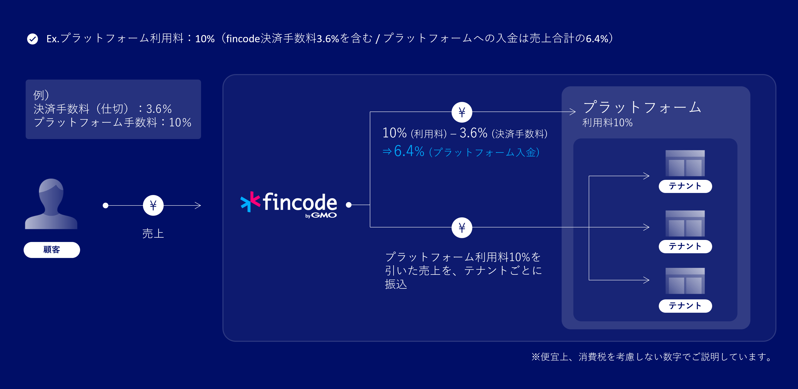
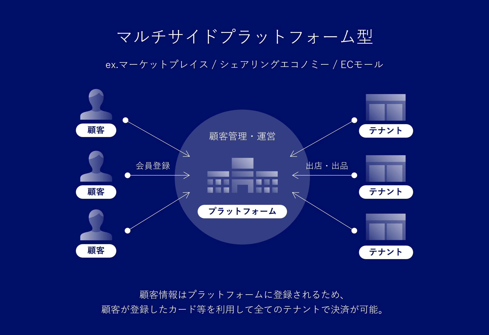
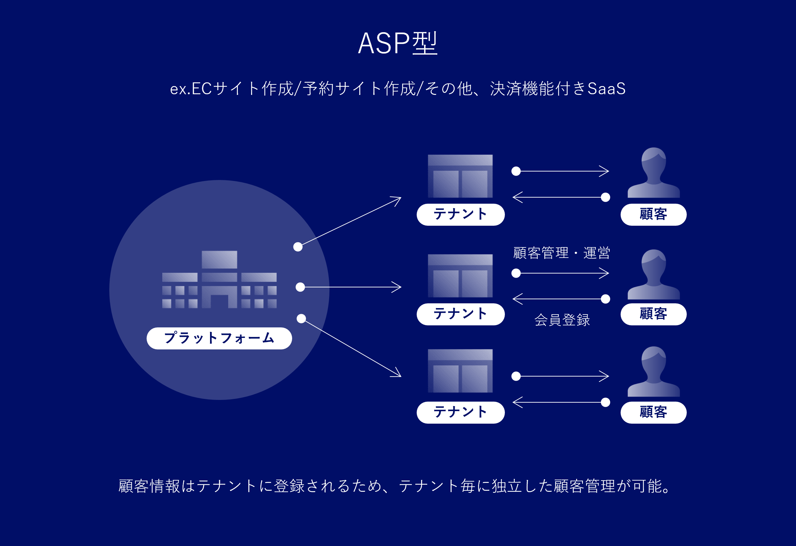

什么是平台
使用 fincode 的平台功能，可以顺利开展按支付金额向租户商户收取平台使用费的 BtoBtoC 型或 BtoBtoB 型业务。
fincode 上的商户角色（即商户类型）分为平台和租户商户。平台可以从多个方面管理租户商户。
只有法人可在生产环境使用平台功能。
使用平台功能须接受 fincode 和支付公司的审核。
使用平台功能须接受 fincode 和支付公司的审核。
向租户商户收取平台使用费
销售款减去平台使用费后为租户商户的入账金额。平台使用费减去 fincode 手续费（支付手续费）后为平台的入账金额。
客户信息共享范围
fincode 支持选择在整个平台共享购买者的客户信息，或按租户商户分别管理。例如，可支持以下业务模式。多边平台模式
在此模式下，平台直接面向租户商户，也直接面向购买租户商户商品或服务的购买者。
在这种模式下，询问购买者“您在哪个网站或服务注册了会员？”时，通常会得到平台的名称。
客户信息登记在平台上，客户可使用已登记的卡片等支付方式向所有租户商户付款。
示例
- 外卖配送平台
- 网约车平台
- 电商平台

ASP 模式
平台向租户商户提供解决方案，由租户商户直接面向购买其商品或服务的购买者。
在这种模式下，询问购买者“您在哪个网站或服务注册了会员？”时，通常会得到租户商户的名称。
客户信息登记在租户商户下，因此各租户商户可以独立管理自己的客户。
示例
- 电商建站服务或 ASP 购物车
- 带支付功能的建站服务，例如预约网站或捐赠网站
- 面向 BtoB 或 BtoC 的带支付功能 SaaS，例如聊天机器人和电子账单开具服务
